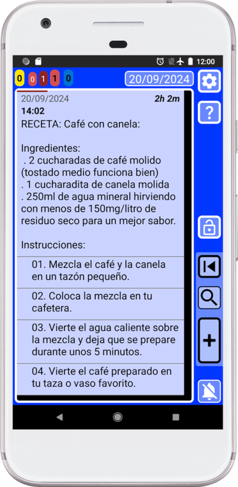
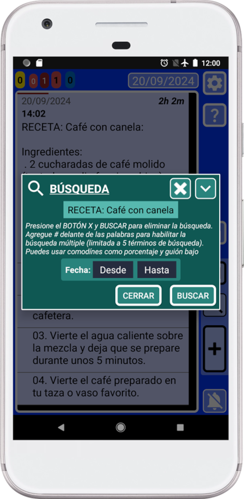
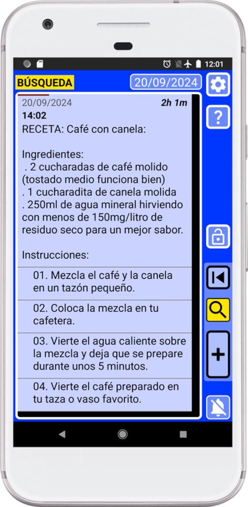
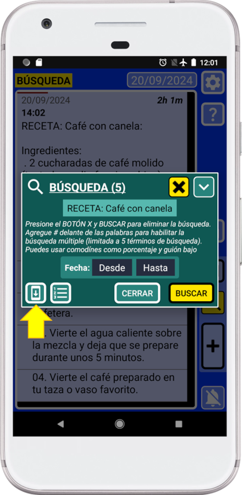
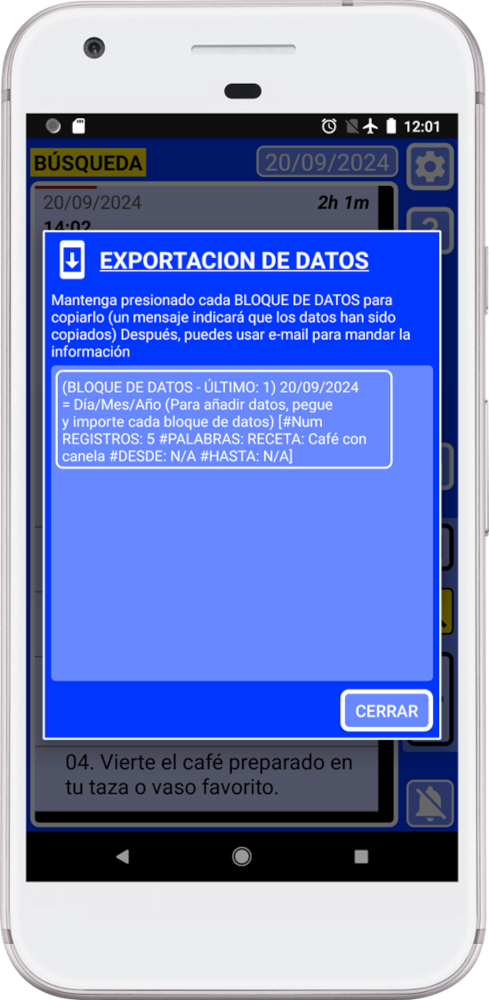
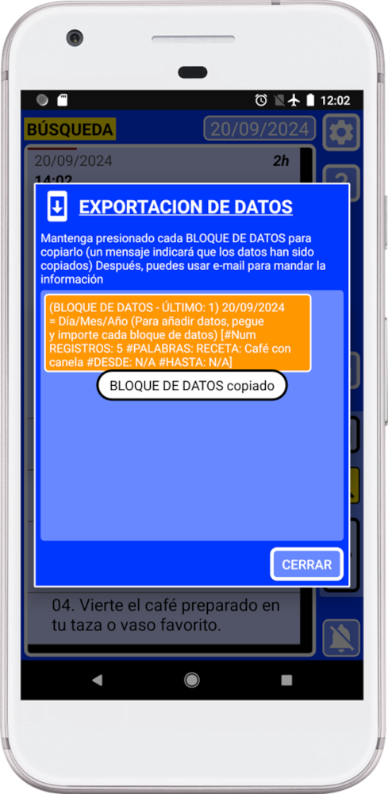
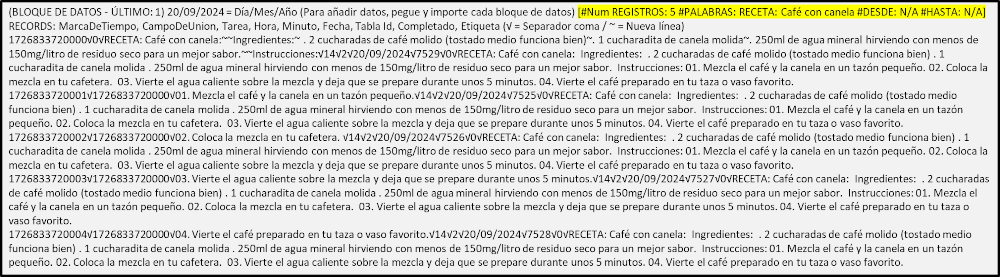

Este manual te mostrará cómo usar el sistema de búsqueda para exportar registros específicos y compartirlos.
Esto permitirá encontrar registros específicos y copiarlos como texto. Luego podrás compartir la información con otros usuarios de SECURElogBook.
Por ejemplo, puedes crear una alarma/recordatorio/lista de compras para otra persona. Luego puedes compartir el registro con esa persona y la alarma se activará al mismo tiempo, ya que el registro se recreará teniendo en cuenta la zona horaria.
Otra aplicación de esta función es que un grupo de personas puede encontrar el mejor momento para reunirse. Si todos comparten registros de cuándo tienen tiempo para reunirse, una vez importados los registros, puede usar el sistema de búsqueda para averiguar cuál es el mejor momento para reunirse. Este será el momento con menos tiempo entre registros, indicado en cada registro por la flecha que apunta a la derecha.
Recuerda, SECURElogBook es una herramienta segura y flexible que puedes usar para muchas cosas diferentes!
Digamos que quieres enviar tu receta de café con canela a tu amigo.

Nota que etiquetamos nuestro registro usando la palabra “RECETA” al frente. Si etiquetamos todas las recetas con la misma palabra, podemos buscar “RECETA” para mostrar solo todas las recetas. Etiquetar registros hará más fácil encontrar cosas cuando tengamos miles de registros.
Puedes usar el sistema de búsqueda para seleccionar lo que quieres enviar a tu amigo. En este caso queremos enviar a nuestro amigo nuestra receta de café con canela.
1. Abre el sistema de búsqueda presionando

Debido a que estamos usando el sistema de búsqueda para seleccionar lo que queremos, puedes usar la flexibilidad del sistema de búsqueda para encontrar exactamente lo que quieres.
2. Presiona “BUSCAR”.
Ahora SECURElogBook solo mostrará los resultados de la búsqueda:

3. Abre el sistema de búsqueda nuevamente presionando

Ahora, debido a que hay resultados de búsqueda, el sistema de búsqueda mostrará dos botones adicionales en la esquina inferior izquierda.
4. Presiona el botón inferior izquierdo, indicado con una flecha amarilla en la imagen de arriba, para abrir la ventana de “EXPORTACION DE DATOS”.

La ventana de “EXPORTACION DE DATOS” transformará los registros dentro de la búsqueda en información de texto que la aplicación puede usar para recrear los registros.
Esta ventana generará bloques de datos, información de texto, que puedes copiar y pegar. Cuanta más información tenga tu resultado de búsqueda, más bloques de datos se crearán.
5. Mantén presionado el bloque de datos para copiarlo.

Recuerda que si cierras la ventana de “EXPORTACION DE DATOS”, la información se eliminará del portapapeles para no permitir que otras aplicaciones accedan a tu información.
6. Pega la información en la aplicación de mensajería instantánea o en la aplicación de correo electrónico para compartir la información con tu amigo.

También puedes compartir la información sin internet, usando una unidad USB, memoria USB o tarjeta SD.
Recuerda que puedes proteger tu información. 7-Zip es un archivador de archivos gratuito y de código abierto para Windows. Puedes usarlo para proteger tu información con contraseña/cifrado.
Ahora tu amigo podrá importar la información a la aplicación para crear un registro con la receta de café con canela.
Puedes usar esta función para compartir cualquier cosa que ya tengas: recetas, listas de compras, manuales, entrenamientos, dieta, …
Pero también puedes crear registros en nombre de otra persona:
. Si eres padre, puedes crear un horario para ayudar a tu hijo a manejar mejor el tiempo.
. Puedes crear registros para programar la toma de medicamentos para una persona mayor para que no olvide tomar la medicación.
. En una pequeña empresa, las personas podrán compartir tareas con sus compañeros de trabajo.